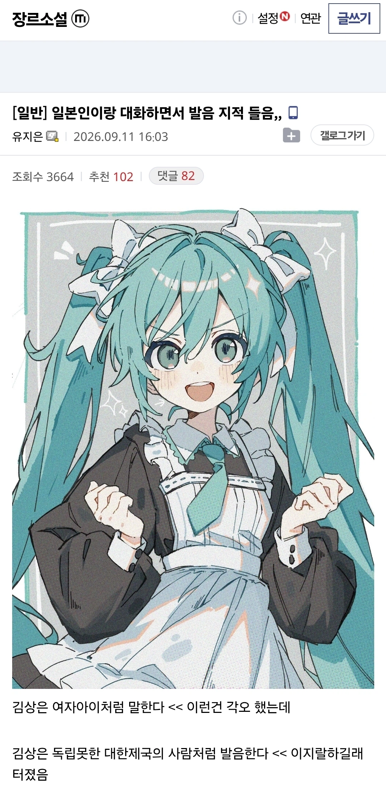

미국 토니스타크도 토르한테 너 마치 셰익스피어 연극같이 말하네 이렇게 깐거처럼
일본 말투를 무슨 아다치공 물 한잔 따라줄수 있겠소? 이런말투로 한건가
진짤까.. ㅋ
집 쇼파에 누워서 일본애니보다가 뜬금없이 생각나서 적은글일듯
ㄹㅇ 오프에서 일제 화제를 꺼내면 UFC인데 ㅋㅋㅋ
찐친이면 서로 쪽바ㅡ리 조센ㅡ징하고 노는데 뭐
저 대화 폼자체가 한 10년전에도 봤던거라 ㅋㅋ
야!!!!!!!
이쑈니 노무
그 말에 분수처럼 터졌다고??
대단한 헨타이구나!
아무튼 주작이라노~~
내 맘에 안들어서 주작이라노~~
일본인이 일본어로 대화하며 대한제국이라는 워딩을 쓸 확률이 제로에 수렴함
과거사 ㅈ도모르는 애들 개많은데 대한제국을 말한다고? ㅋㅋ지랄이지
근데 말하는게 일본인의 센스라기보단 그냥 장붕이 스타일이긴함
왜 야애니처럼 말합니까?
여어 글빛아 원피스 나왔더라
망국의 위기에서 살아남기위해 급하게 배운 생존 일본어처럼 말한다는 것인가
김상은이 누구야
구글링해보니까 이지아 본명이라네
김상은이 사람이름이 아니고 김상
한국어로는 김씨…
걍 드립쳐본건데
와시와 히노모토노 쿠니, 에도노 모노노후데 고자르.
다른나라 역사따위 알겠냐
미쿠이쁘당
근대사 ㅈ도모르는 애들이 대한제국을 알겠냐고
와따시와개붕이데고자루 안타와나니모노쟈
히틀러같은 독일발음이랑 비슷한 느낌인가 ㅋㅋㅋㅋㅋ